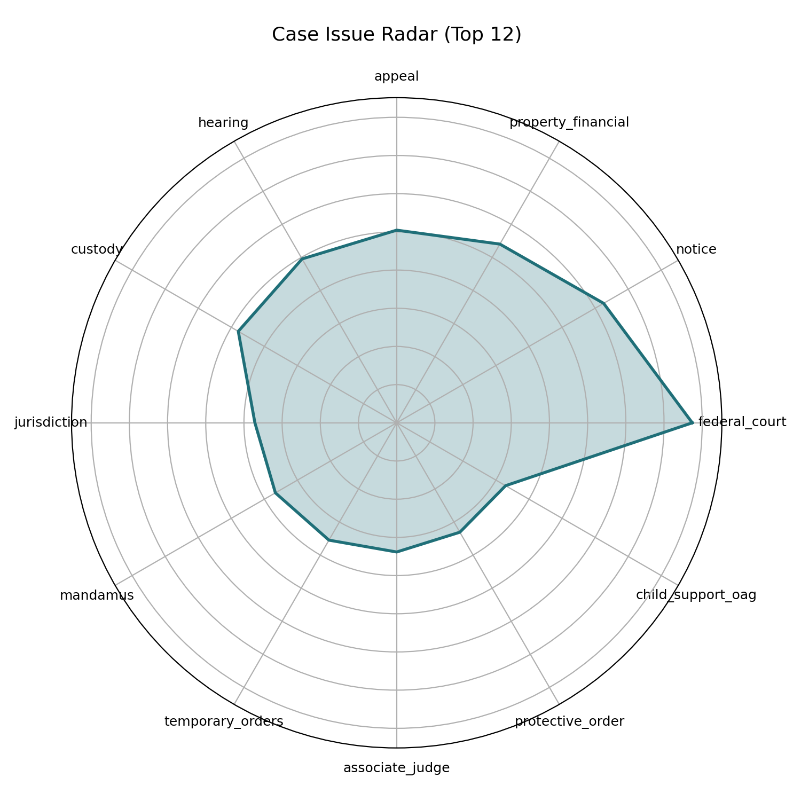
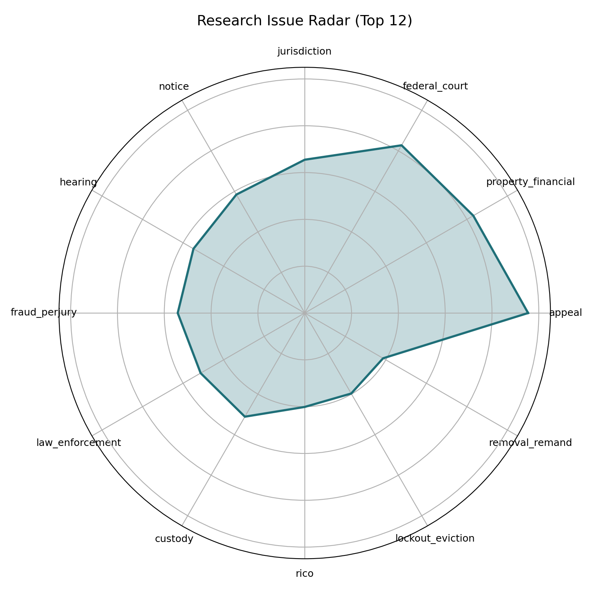
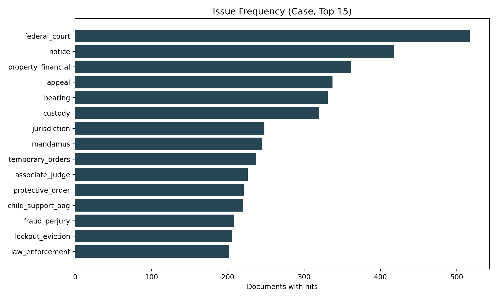
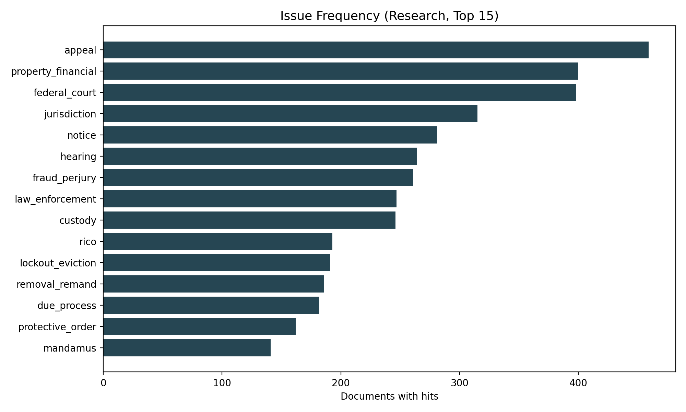
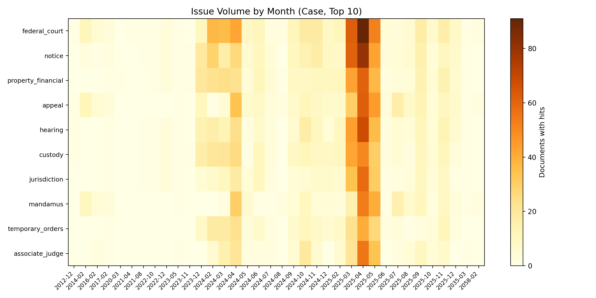
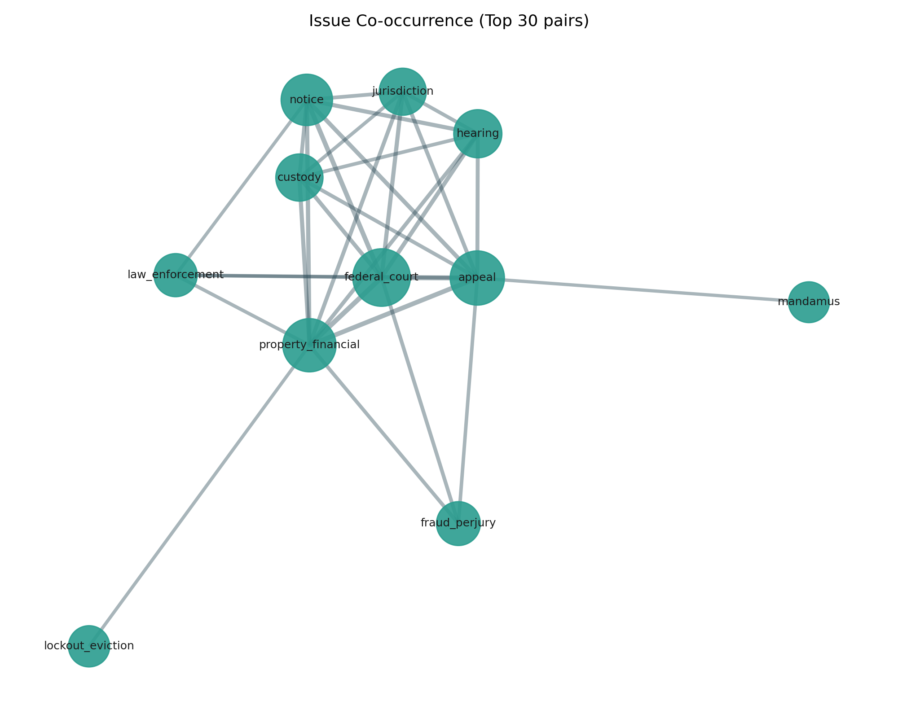

Issue Radar & Evidence Mapping
Document-derived visual mapping (navigation aid, not legal advice).
Case docs: 631 PDFs, 22447 pages.
Research docs: 481 PDFs, 9816 pages.
Total: 1112 PDFs, 32263 pages.
Case Issue Radar

Research Issue Radar

Issue Frequency (Case)

Issue Frequency (Research)

Issue Heatmap by Month

Issue Co-occurrence Network
